Architecture Foundry
On this page
Recommendation: High-value companion to delivery tools; small distribution surface.
On a small screen, swipe horizontally to read every column.
| Snapshot | Assessment |
|---|---|
| Supplied location ID | archi-foundry |
| Product family | Agent delivery |
| Implementation stage | Claude plugin / knowledge pack |
| Review date | 2026-09-26 |
| Local state | not a git checkout |
Vision and the problem it addresses
Give Claude a repeatable architecture discipline: quantify requirements, compare alternatives, document decisions and turn important rules into falsifiable checks.
Who needs it: Architects, technical leads and developers designing or reviewing a system.
The moment it becomes useful: An attractive architecture diagram hides missing capacity assumptions, failure analysis and rejected options. Teams repeatedly debate the same choices.
How it works

This diagram summarizes the inspected design. It is not evidence of a successful end-to-end deployment. For a hands-on journey, use the onboarding guide.
How well it addresses the problem
- Plugin manifest and ten skills have a concrete scope; the product is primarily instructions and curated knowledge.
- The bundled test-drive report records an audit, spec exercise and fail/pass/waived-pass checks, including defects found during testing.
- An audit-to-fitness-check workflow can produce durable enforcement rather than another document.
These are implementation strengths. Repeated use, customer demand and measured business outcomes remain separate questions.
What is missing or unproven
- The test-drive is historical evidence, not a newly rerun benchmark or proof across many codebases.
- Prompt discipline depends on model behavior; generated checks need precision/recall and an intentionally violating fixture.
- The plugin homepage uses a different owner spelling from the requested personal account and the supplied directory is an unpacked bundle without git history.
- It overlaps with Foundry role packs and Cairn’s spec workflow. Reuse skills without creating conflicting instructions.
Smallest useful next step
Publish one narrow, documented audit-to-check demo with a versioned fixture and repeatable outputs. Correct distribution metadata and define the boundary with Foundry.
Acceptance exercise: Run an architecture review on a disposable sample with a known outbound timeout flaw. Verify every finding cites a real line, then run the generated check on bad/good/waived inputs. Do not claim the historic test-drive was rerun.
This is a proposed validation exercise unless explicitly recorded as executed in VALIDATION.
Position in the portfolio
Related work: Foundry / AI SDLC, Java AI governance scaffold, Cairn, Foundry Stage 0 seed.
Read the overlap and integration decisions before merging features. Shared vocabulary does not guarantee shared IDs, permissions, storage or lifecycle semantics.
On a small screen, swipe horizontally to read every column.
| Reviewer judgment, 1–5 | Score |
|---|---|
| Effort to a credible narrow pilot | 1 |
| Potential breadth and recurrence of the need | 3 |
| Integration, operational and consequence exposure | 2 |
These are ordinal planning judgments, not completion percentages or a commercial valuation. Empty/archive projects should be parked rather than treated as active bets.
Evidence and next reading
Source references and snapshot limits · Developer / Claude onboarding · Portfolio synthesis